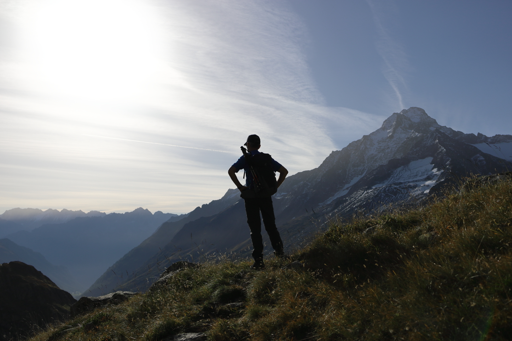
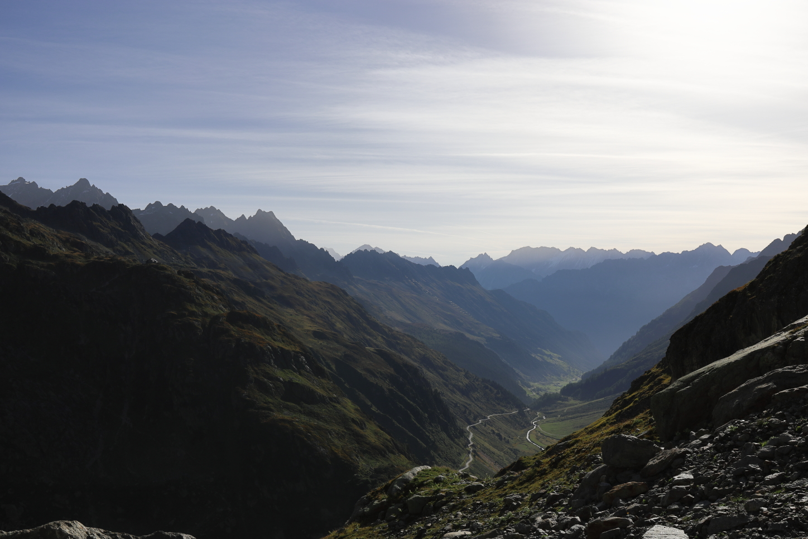
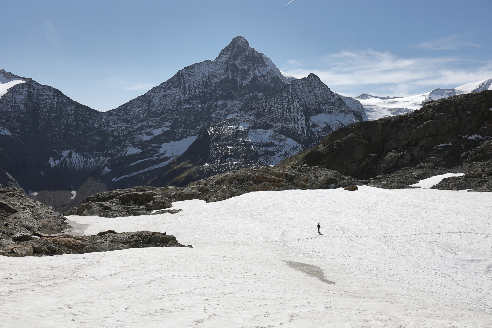

Guferjoch
September 25, 2021 by Pat and Bruno ‐ 5 min read
| Difficulty | T4+ |
|---|---|
| ⇄ Distance | 11.9 km |
| ↑ Up | 1180 m |
| ↓ Down | 1180 m |
| Notable Locations | Sustlihütte SAC, Guferjoch, Sustenlochfirn, Sustenpass |
| Public Transit Access? | Yes |
 An incredible hike near the Sustenpass on the border between Bern and Uri.
Arrival
We parked near the
Alternatively, you could arrive the evening before and stay at the
 The view from the parking lot. I love the autumn colours at this time of year.
The view from the parking lot. I love the autumn colours at this time of year.
Sustlihütte SAC (Leiterweg)
The first part of this hike has two possible routes: the
 Ladders along the
Ladders along the
 Looking towards the
Looking towards the
At the end of the
Although the Leiterweg had been been marked as a mountain hiking path (white-red-white markings), the path as we continued on from the Sustlihütte SAC changed over to an alpine path (white-blue-white markings).
A view back to the
Traverse Across the Stöss
The hike from the Sustlihütte SAC to the base of the
 About half way between the
About half way between the
Remember to always stop and turn around to enjoy those views, the dramatic shadows down the valley were truly incredible.
 Looking down the valley towards Wassen.
Ascent to the Guferjoch
As is the case with many mountain paths, it’s not at all visible from the vantage point of the Sustlihütte. Here’s the approximate path to reach the Guferjoch:
 The path leading to the
The path leading to the
While most of the path so far had been in the realm of T3, the ascent to the Guferjoch seems to typically be rated at around a T4+. There are a number of fairly sketchy scrambling passages which are largely secured by chains and steel cables. The route up the rock-face to the joch can be seen here:
 The ascent to the
The ascent to the
The first portion of the scramble is secured by a single long steel wire. This wire makes the first part of the ascent considerably easier since good handholds can be somewhat tricky to find in places due to the rocks having been smoothed considerably from glacial erosion.
The first portion of the ascent which is secured by a single (long) steel wire.
Following this first scramble, you then have to traverse to the right-hand side of the rock-face, which is secured by a number of chains.
 The second portion of the ascent which requires a traverse to the right-hand side of the rock-face.
The second portion of the ascent which requires a traverse to the right-hand side of the rock-face.
The terrain here is quite exposed; good thing there is an abundance of handholds with the chains/cables.
The third and final traverse moves back to the left-hand side of the face, back towards the joch. This is by far the most challenging part of the ascent due to there being several small near-vertical scrambling sections.
Once at the top, you’re greeted with an incredible view over both sides of the valley — the sweat it took to get up here was definitely worth it!
The
 The view towards the
The view towards the
Descent to the Sustenlochfirn
The descent from the Guferjoch to the
The descent from the
Something to keep an eye on when you get to the

The "new" path going across the
Sustenpass
The hike back to the
 There are several additional snowfields that need crossing on the way back to the
There are several additional snowfields that need crossing on the way back to the
The path is generally well marked, both on the path and when crossing the snowfields. Note that the portions across some of the snowfields are occasionally marked by Steimännli (deliberately placed piles of rocks) as opposed to white-blue-white markings.
Gorgeous views all the way back to the
Been there, done that ;)
Return via 19th Century Pass Road
Once we got to the
 Taking the old pass road to return to
Taking the old pass road to return to